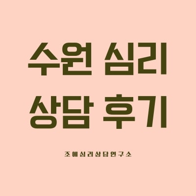
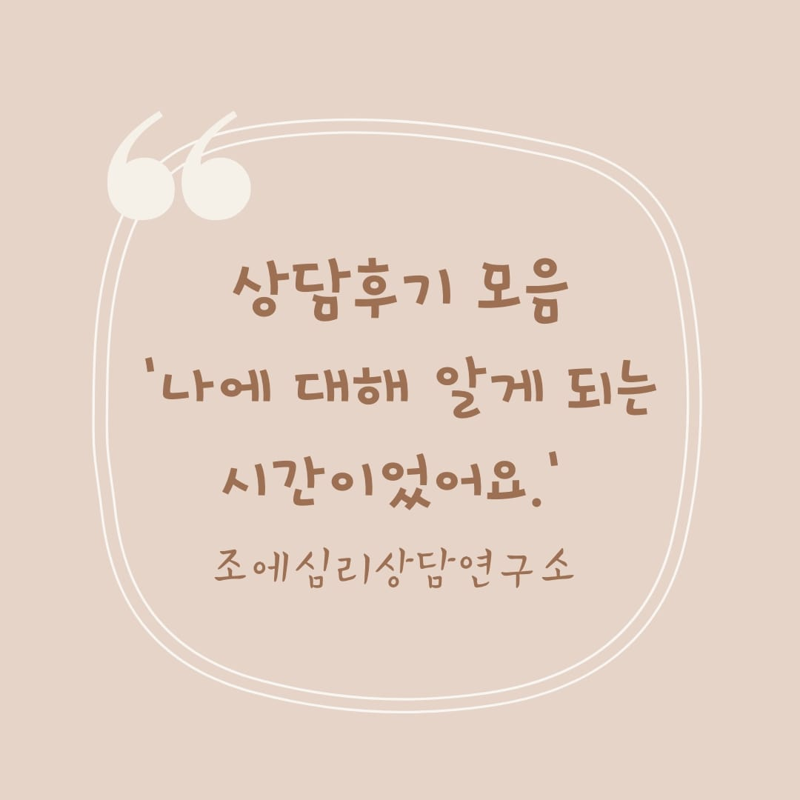

블로그 상담후기
조에심리상담센터 블로그에 게시된 내담자들의 상담 후기입니다. 다양한 프로그램을 통해 변화된 일상과 마음의 회복 이야기를 확인하세요.

수원 심리 상담 후기_불안과 걱정 편안해졌어요.
수원 심리상담 추천 청년마음건강바우처_이겨낼 힘이 생겼어요!
앞으로의 내가 더 기대됩니다_후기 수원심리상담센터
심리상담센터 선택 고민이 사라지는 후기_근원적인 부분이 달라지고 삶이 편안해졌어요.

상담후기 모음 ;나에 대해 알게 되는 시간이었어요'_ 수원심리상담센터 조에심리상담

상담전문가의 솔직한 상담후기(번아웃신드롬)_ 성인심리상담, 수지심리상담센터

대면 상담 후기 '많이 긍정적인 사람이 되었어요'
대면상담 후기 '나만의 유일무일한 색 찾기'
내담자 상담 후기 더 보기
조에심리상담센터의 다양한 상담 후기와 정보를 외부 채널에서도 확인해보세요. 내담자분들의 생생한 경험과 심리상담에 관한 유용한 정보를 제공해드립니다.